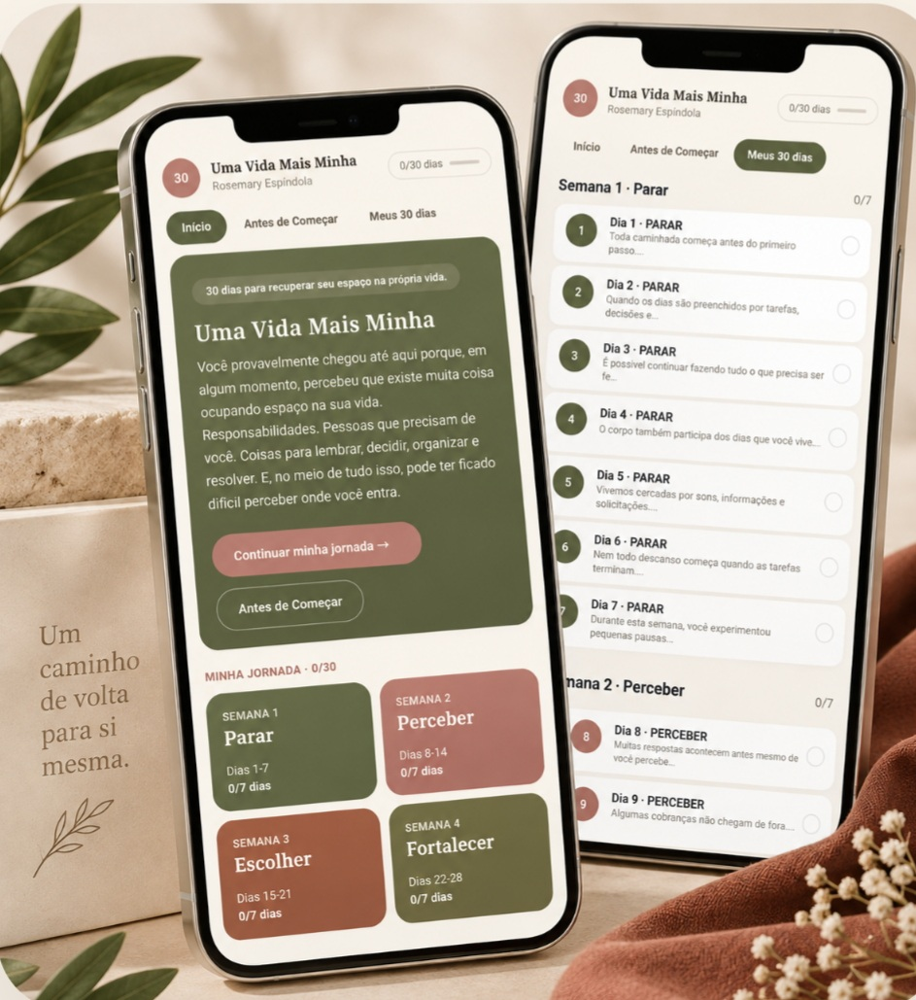

Responda 5 perguntas rápidas sobre a sua rotina, suas escolhas e o lugar que você tem ocupado nos próprios dias.
Você pode continuar dando conta de tudo.
A questão é: por quanto tempo você quer continuar ficando por último?
Pelas situações que você acabou de percorrer, existe algo importante para observar:
enquanto você resolve, se adapta, evita desagradar e espera o momento certo para cuidar do que também importa para você, a sua vida continua acontecendo.
E aquilo que é seu vai ficando para depois.
Não porque você decidiu que não importa.
Mas porque, repetido muitas vezes, “depois” também vira uma forma de viver.
Você não precisa abandonar suas responsabilidades para mudar isso.
Precisa começar a ocupar um lugar diferente dentro da vida que já tem.
Foi para ajudar nesse começo que eu criei o Uma Vida Mais Minha.
Durante 30 dias, você será conduzida por pequenas reflexões e experiências práticas para perceber padrões que acontecem no cotidiano e começar a fazer escolhas que também considerem você.
Parar • Perceber • Escolher • Fortalecer

Direto pelo celular.
Um dia de cada vez.
— pagamento único
QUERO COMEÇAR MEUS 30 DIASVocê já percebeu que vem ficando para depois. Agora pode começar a fazer diferente.